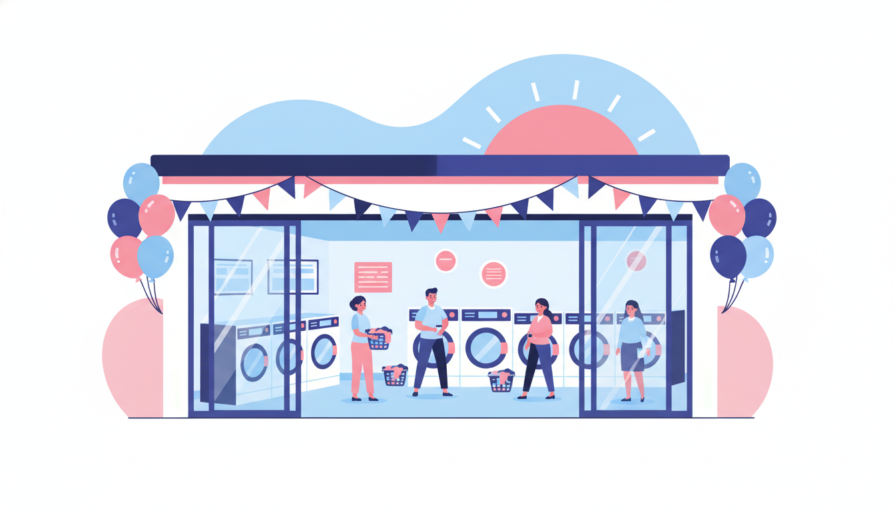
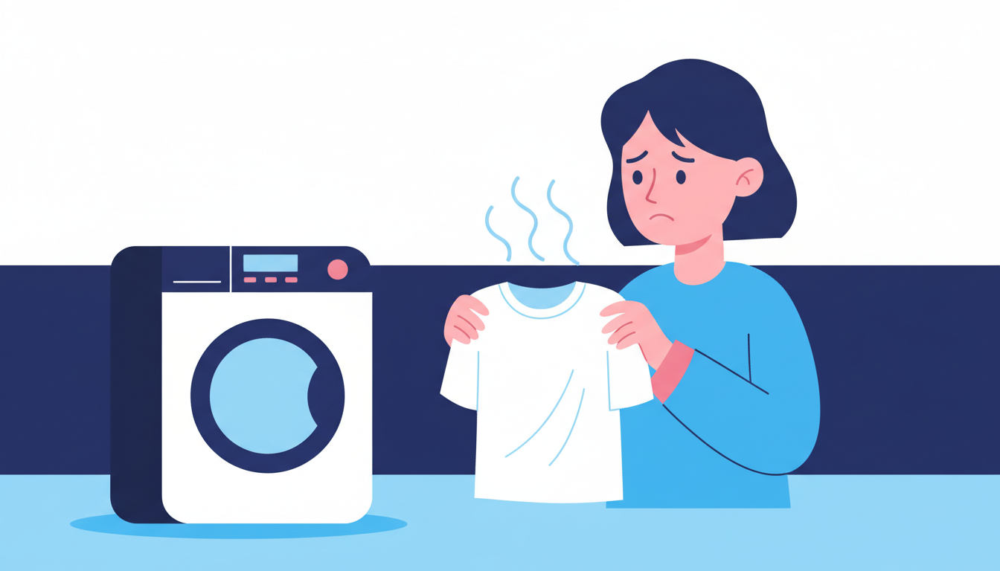
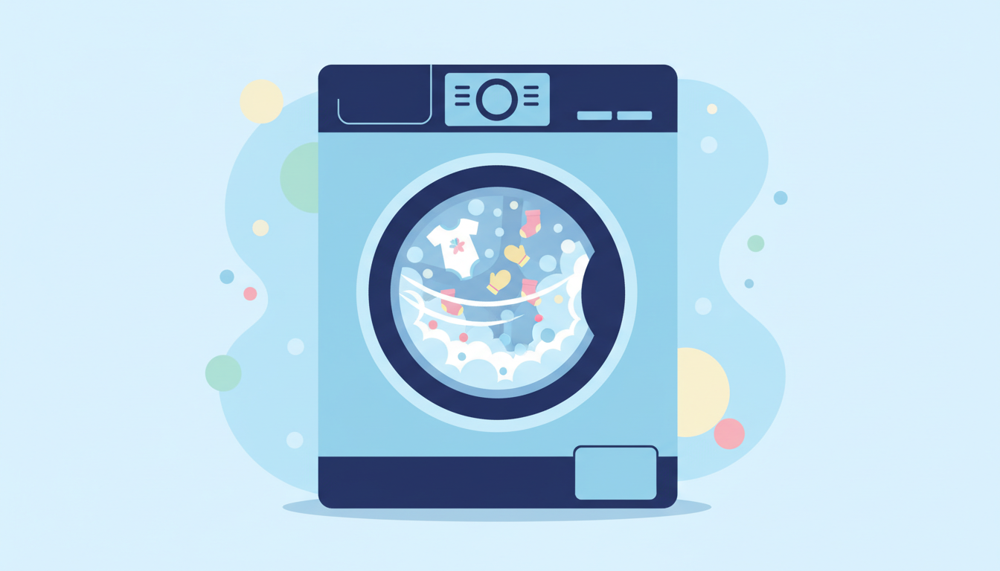
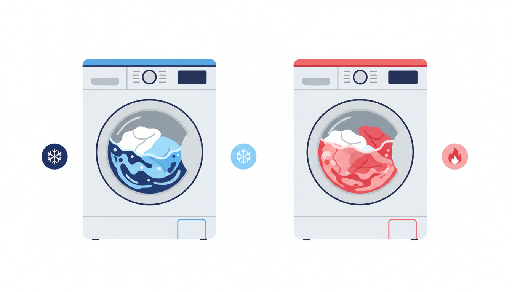
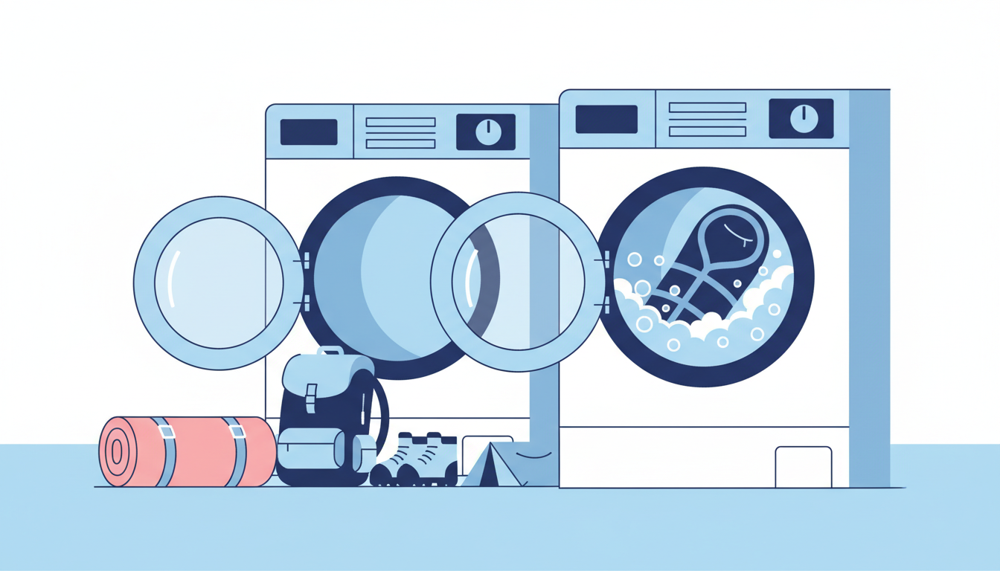
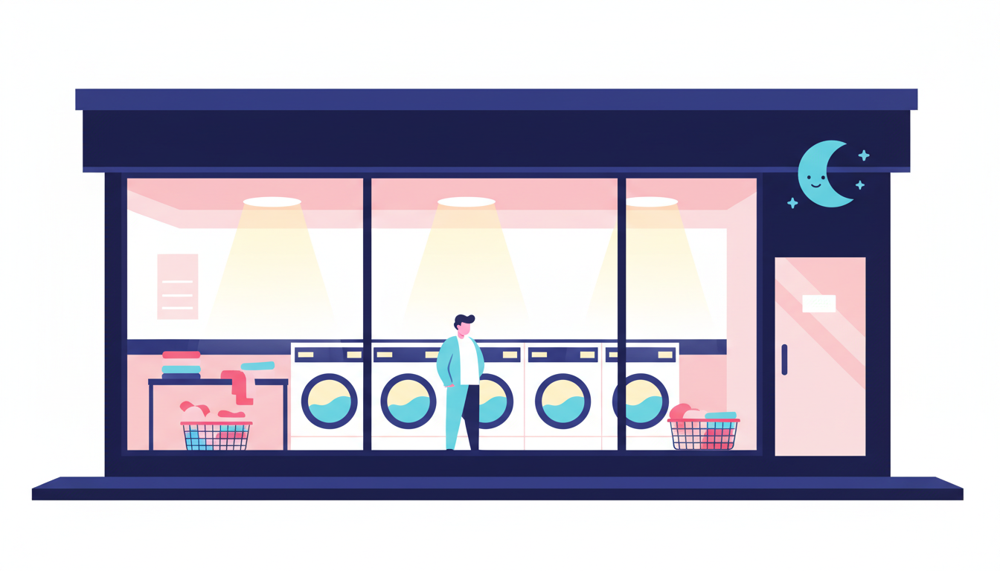
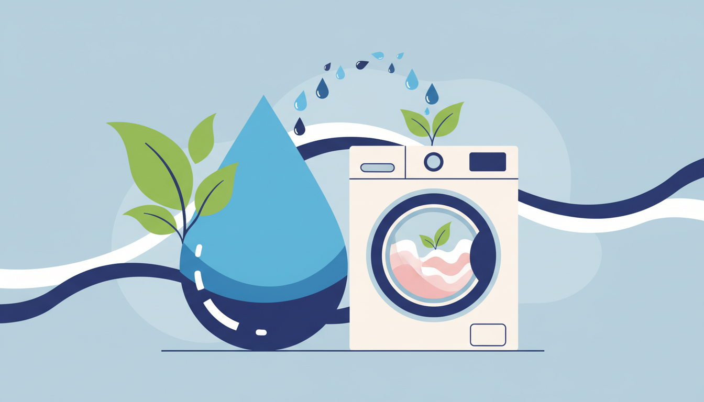

Laundry Day Blog
Tips, guides, and laundry wisdom from Melbourne's friendliest laundromat.

18 April 2026
Opening Day at Laundry Day: What to Expect
Laundry Day is opening in Melbourne! Here's what to expect at our new laundromats in Brunswick East, St Albans, and Maribyrnong.
Read More →
16 April 2026
Why Your Clothes Smell After Washing (and How to Fix It)
Clothes still smell after washing? Common causes and simple fixes to get your laundry smelling fresh every time.
Read More →
14 April 2026
Laundry Sorting 101: A Beginner's Guide
Not sure how to sort your laundry? A simple guide to sorting by colour, fabric, and soil level for the best wash results.
Read More →
11 April 2026
How to Wash Curtains and Drapes
A step-by-step guide to washing curtains at a laundromat. Commercial machines are ideal for bulky window treatments.
Read More →
9 April 2026
Apartment Living Without a Washing Machine
No washing machine in your apartment? Practical tips for managing laundry in Melbourne without your own washer.
Read More →
7 April 2026
Stain Removal Cheat Sheet
Quick reference guide for removing common laundry stains — coffee, red wine, grass, grease, and more.
Read More →
4 April 2026
How to Wash Baby Clothes Safely
A parent's guide to washing baby clothes — from gentle detergents to the right temperature for sensitive skin.
Read More →
2 April 2026
Cold Water vs Hot Water Washing: What to Use
Should you wash in cold or hot water? A practical guide to choosing the right temperature for different fabrics.
Read More →
31 March 2026
Best Laundromats in Melbourne's Western Suburbs
Looking for a modern laundromat in Melbourne's west? What to expect in St Albans, Maribyrnong, and surrounds.
Read More →
28 March 2026
How to Wash a Sleeping Bag at a Laundromat
Keep your camping gear fresh without risking damage. A step-by-step guide to washing sleeping bags.
Read More →
26 March 2026
Pet Hair on Clothes? Here's How to Fix It
Struggling with dog or cat hair on your clothes? The best tricks for removing pet hair in the wash.
Read More →
24 March 2026
Laundromat Safety Tips for Night Visits
Visiting a laundromat at night? Practical safety tips for late-night laundry runs and what to look for.
Read More →
21 March 2026
How to Get Rid of Musty Towel Smell
Towels smelling musty even after washing? Here's why it happens and how to fix it for good.
Read More →
19 March 2026
The Share House Laundry Survival Guide
Living in a share house with limited laundry access? Tips for managing laundry day without the arguments.
Read More →
17 March 2026
Save Water by Using a Laundromat
Commercial washing machines use significantly less water per kilogram than home washers. Here's how.
Read More →
14 March 2026
How to Wash Pillows and Cushions Properly
When did you last wash your pillows? A guide to getting them clean, fluffy, and fresh again.
Read More →
12 March 2026
Best Laundromats in Melbourne's Inner North
Looking for a great laundromat in Melbourne's inner north? Here's what to look for and why locals love Laundry Day.
Read More →
10 March 2026
How Long Does a Laundromat Wash Take?
A practical guide to laundromat wash and dry cycle times, plus tips for the fastest turnaround.
Read More →
7 March 2026
What to Bring to a Laundromat: Complete Checklist
Heading to the laundromat for the first time? Here's your complete packing checklist so you don't forget anything.
Read More →
5 March 2026
How to Wash Sneakers at a Laundromat
Dirty sneakers? Here's how to safely wash them in a commercial machine and get them looking fresh again.
Read More →
2 March 2026
The Ultimate Laundromat Etiquette Guide
Be the laundromat neighbour everyone loves. Our friendly guide to the unwritten rules of shared laundry spaces.
Read More →
2 March 2026
Laundromat vs Washing at Home
When does a laundromat make more sense than washing at home? From share houses to bulky items, here's the honest comparison.
Read More →
2 March 2026
Self-Service Laundromats in Melbourne: What to Know
First time at a laundromat? Here's everything you need to know — what to bring, how it works, and what to expect in Melbourne.
Read More →
2 March 2026
How to Wash a Doona at a Laundromat
Your home machine can't fit a doona — but our 27KG washers can. Here's the step-by-step guide to getting your doona fresh and clean.
Read More →